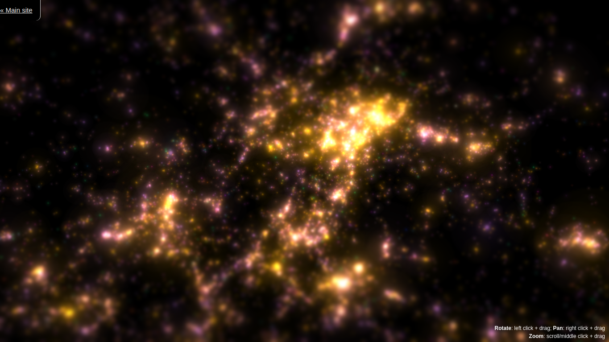

-
Ventusky
ğŸŒ¦ï¸ Ventusky es una aplicación que permite visualizar datos meteorológicos de manera interactiva y en tiempo real. Muestra distintos aspectos del clima como la velocidad del viento 🌬ï¸, temperatura 🌡ï¸, presión atmosférica 🌠y nubosidad â˜ï¸
Visitar Ventusky

Comentarios sobre Ventusky:
-
Open Street Map
🌠#OpenStreetMap es una plataforma colaborativa de mapeo digital de código abierto que se ha convertido en una herramienta esencial para la investigación en geociencias y programación. OpenStreetMap es una base de datos geográfica que permite la creación y edición de mapas. A diferencia de los mapas comerciales, permite el acceso gratuito y la distribución de datos geográficos. ğŸ“ŠğŸ—ºï¸ Además, OpenStreetMap cuenta con una API (Interfaz de Programación de Aplicaciones) que permite a los desarrolladores de software crear aplicaciones basadas en datos geográficos, lo que amplÃa aún más las posibilidades de uso de la plataforma. 💻📱 En el campo de las geociencias, OpenStreetMap ha demostrado ser una fuente confiable de datos geográficos para la investigación en áreas como la climatologÃa, la planificación urbana, la conservación de la biodiversidad, la gestión de desastres naturales, entre otras. 🌦️🏙️🌿🌪️ Además, la plataforma ha sido utilizada en proyectos de mapeo participativo en paÃses en desarrollo, lo que ha permitido a las comunidades locales tener un mayor control sobre la información geográfica que les afecta directamente. ğŸŒğŸ¤ En el campo de la programación, OpenStreetMap es una plataforma de gran interés para los desarrolladores de aplicaciones que requieren datos geográficos precisos y actualizados. Al ser una fuente abierta y colaborativa, OpenStreetMap ofrece una alternativa a las plataformas de mapas comerciales, lo que puede ser beneficioso para empresas y organizaciones que buscan reducir costos. 💡💼
Visitar Open Street Map

Comentarios sobre Open Street Map:
-
Gaia GPS
🗺️ #GaiaGPS es una plataforma de mapeo en lÃnea que utiliza tecnologÃa GPS para proporcionar mapas precisos y detallados en tiempo real, y está diseñada especÃficamente para actividades al aire libre como senderismo y camping. 🥾🏕️ La plataforma permite a los usuarios acceder a mapas de alta calidad de todo el mundo, lo que les permite planificar rutas, hacer un seguimiento de su ubicación en tiempo real y compartir información de manera eficiente con otros miembros de su grupo. 🌍📍 Además, la plataforma ofrece la posibilidad de guardar mapas sin conexión para acceder a ellos en áreas donde no hay conexión a internet. 📶⌠GaiaGPS también tiene aplicaciones prácticas en geologÃa, cartografÃa y ciencias ambientales. 🌋🗺️ Su código de programación avanzado ha sido utilizado en estudios cientÃficos para mapear áreas inaccesibles, proporcionando información valiosa sobre la topografÃa y geologÃa de nuestro planeta. 🌐🔬
Visitar Gaia GPS


Comentarios sobre Gaia GPS:
-
Asterank y Galaxies
🌌 #Asterank y #Galaxies están revolucionando nuestra comprensión del universo. Asterank permite a los usuarios explorar los datos de más de 600,000 asteroides conocidos en nuestro sistema solar, calculando su valor potencial en términos de recursos minerales y metales preciosos. 🌠💠Galaxies, por otro lado, proporciona una herramienta de visualización interactiva de las galaxias y cúmulos de galaxias cercanos, permitiendo a los astrónomos y cientÃficos aficionados investigar la estructura y la dinámica de nuestro universo. 🌌🔠Ambas aplicaciones hacen uso de técnicas avanzadas de programación y procesamiento de datos para ofrecer una experiencia de usuario fluida e interactiva. 💻✨ La plataforma de Asterank se basa en el lenguaje de programación JavaScript, mientras que Galaxies utiliza WebGL para renderizar visualizaciones 3D en tiempo real. 🌐🖥️
Visitar Galaxies

Comentarios sobre Galaxies:
-
The Paleobiology Database
🦖 #PaleobiologyDatabase (PaleoBioDB) es una base de datos global en lÃnea que se utiliza para recopilar y proporcionar información sobre la biodiversidad pasada. Contiene una gran cantidad de información de alta calidad sobre fósiles, incluyendo su ubicación geográfica y temporal, su morfologÃa y su clasificación taxonómica. 🗺️🦴 La base de datos es una herramienta valiosa para los cientÃficos y los entusiastas de la paleontologÃa, ya que permite el acceso y la integración de datos de múltiples fuentes en un solo lugar. 🌍🔍 La Paleobiology Database es una plataforma de colaboración, y permite la contribución de datos por parte de cientÃficos y aficionados de todo el mundo. ğŸŒğŸ¤ La base de datos también cuenta con una interfaz de usuario intuitiva que permite la visualización de datos en 2D y 3D, y permite la descarga de datos para su análisis posterior. 📊💻 Además, la Paleobiology Database es una herramienta clave para la investigación en biologÃa evolutiva y paleontologÃa. 🧬🔬 Los datos contenidos en la base de datos pueden utilizarse para reconstruir la evolución de las especies a lo largo del tiempo, estudiar la distribución geográfica de los fósiles y comprender cómo la biodiversidad ha cambiado a lo largo de la historia de la vida en la Tierra. 🌱🌏
Visitar PaleoBiologyDataBase


Comentarios sobre Paleobiology Database: